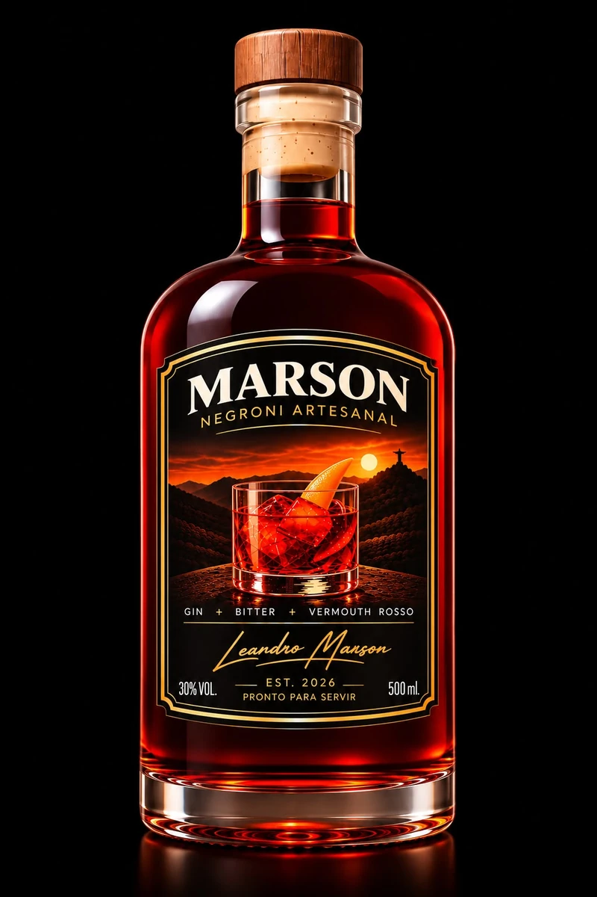

Leandro Marson · Idealizador
Uma história que nasceu da paixão pelo Negroni.

Toda grande história começa com uma paixão. E a nossa começou de uma maneira muito especial.
Negroni artesanal
Mais que um drink.
Bons momentos.
Tradição italiana com alma brasileira.
Conheça o Negroni Marson: pronto para servir,
feito para apreciar sem pressa.
500 mlem cada garrafa
2 versõesClássico e Defumado
Pronto
para servir
para servir

O encontro entre
tradição e personalidade.
tradição e personalidade.